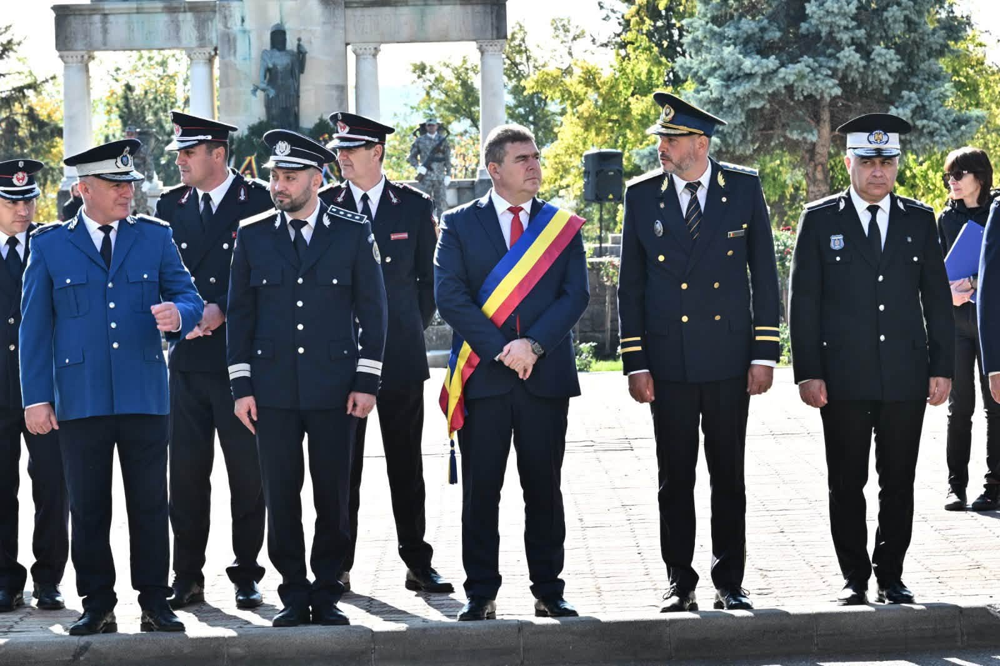
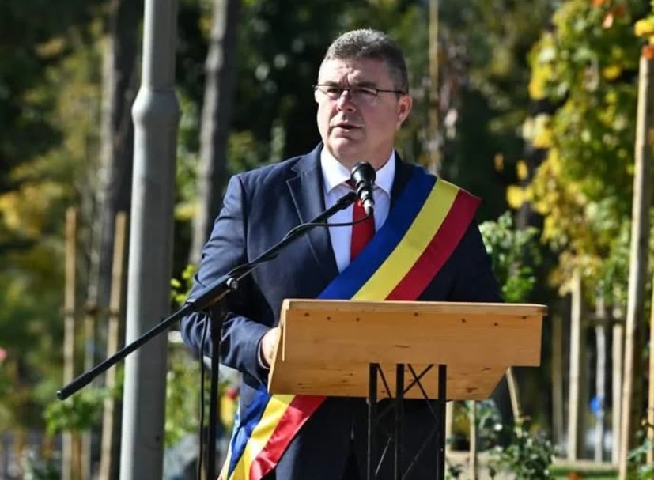
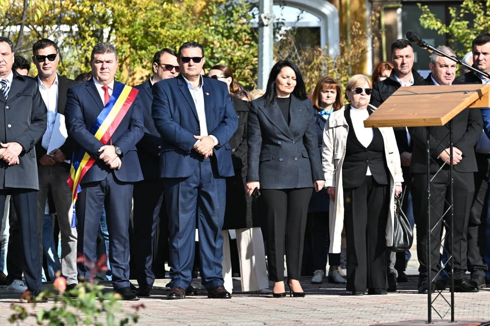
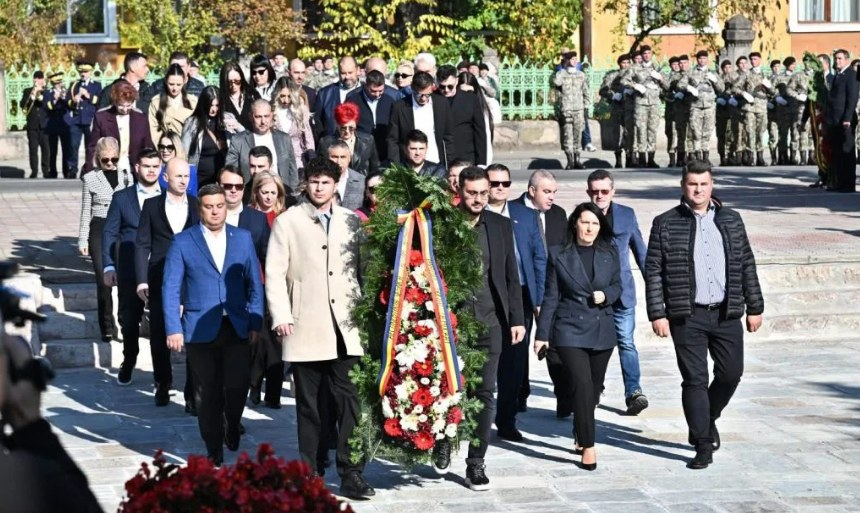

Ziua Armatei Române a fost marcată duminică, 25 octombrie 2026, la Drobeta-Turnu Severin, printr-un ceremonial militar-religios organizat la Monumentul Eroilor. Momentul solemn a adunat la un loc reprezentanți ai autorităților civile și militare, parlamentari, membri ai structurilor de ordine publică și cetățeni ai municipiului, toți veniți să aducă un omagiu celor care s-au jertfit pentru apărarea țării.
Ca în fiecare an, ceremonia de la Severin a avut o încărcătură emoționantă aparte. Militarii gărzii de onoare, drapelul de luptă, rugăciunea pentru eroi și coroanele de flori depuse la monument au transformat dimineața de duminică într-un moment de reculegere și recunoștință pentru întreaga comunitate mehedințeană.
Autorități civile și militare, reunite la Monumentul Eroilor
La ceremonie a participat și președintele Consiliului Județean Mehedinți, Aladin Georgescu, alături de parlamentari PSD de Mehedinți, colegi din administrația județeană și reprezentanți ai Organizației PSD Mehedinți. Au fost prezenți, de asemenea, comandanți și reprezentanți ai instituțiilor militare și de ordine publică din județ.

Prezența la același eveniment a reprezentanților administrației, ai armatei, ai poliției, jandarmeriei și pompierilor a transmis un mesaj de unitate: memoria eroilor nu aparține unei singure instituții sau unei singure generații, ci este o datorie comună a tuturor celor care trăiesc astăzi în libertate.
Aladin Georgescu: „Avem datoria să le păstrăm vie memoria”
În discursul susținut cu acest prilej, președintele Consiliului Județean Mehedinți a amintit contribuția pe care județul a avut-o, de-a lungul istoriei, prin militarii săi care au luptat sub drapelul tricolor.

„Mehedințiul are propria contribuție la această istorie, prin faptele și sacrificiile militarilor care au luptat sub drapelul României. Avem datoria să le păstrăm vie memoria și să transmitem generațiilor tinere respectul pentru valorile naționale.”
— Aladin Georgescu, președintele Consiliului Județean Mehedinți
Președintele CJ Mehedinți a subliniat și faptul că patriotismul se dovedește prin fapte, nu doar prin declarații:
„Patriotismul nu trebuie să se regăsească doar în cuvintele rostite la astfel de ceremonii, ci și în responsabilitatea cu care fiecare dintre noi își îndeplinește datoria față de țară și față de semenii săi.”
— Aladin Georgescu

Coroane de flori în memoria eroilor
Unul dintre cele mai solemne momente ale ceremoniei a fost depunerea coroanelor de flori la Monumentul Eroilor. Reprezentanții instituțiilor și ai partidelor politice au trecut, pe rând, prin fața monumentului, în timp ce militarii gărzii de onoare au dat onorul celor care și-au sacrificat viața pentru țară.

Monumentul Eroilor din Drobeta-Turnu Severin este unul dintre cele mai importante locuri de memorie ale municipiului și găzduiește, an de an, ceremoniile oficiale dedicate zilelor naționale și militare. Aici, severinenii vin să-și amintească de înaintașii care au luptat în cele două războaie mondiale și de toți militarii care au slujit sub drapelul României.
De ce sărbătorim Ziua Armatei Române pe 25 octombrie
Ziua Armatei Române este sărbătorită în fiecare an pe 25 octombrie, în amintirea eliberării, în 1944, a ultimului teritoriu românesc aflat sub ocupație străină. Pe atunci, trupele române au eliberat orașul Carei, încheind operațiunile de eliberare a nord-vestului țării, după luni de lupte grele în care zeci de mii de militari români și-au pierdut viața.
📌 Pe scurt
Ce: Ziua Armatei Române — ceremonial militar-religios
Când: duminică, 25 octombrie 2026
Unde: Monumentul Eroilor, Drobeta-Turnu Severin
Participanți: autorități civile și militare, parlamentari, președintele CJ Mehedinți Aladin Georgescu, cetățeni
Semnificație: eliberarea, în 1944, a ultimului teritoriu românesc aflat sub ocupație străină
Dincolo de caracterul oficial, ziua de 25 octombrie este un prilej pentru fiecare român de a se gândi la cei care poartă astăzi uniforma Armatei Române, fie în unitățile din țară, fie în misiunile internaționale, și la familiile acestora. Ceremoniile organizate în toate reședințele de județ, inclusiv la Drobeta-Turnu Severin, reamintesc că libertatea de azi a fost plătită cu sacrificiul unor generații întregi.
Pentru mai multe știri din Mehedinți, urmăriți secțiunea Actualitate de pe MehedintiAzi.ro și pagina de Facebook Mehedinți Azi.
Redactia MehedintiAzi.ro